原文：arXiv:2502.02737v1，2025-02-04。逐页全文中文翻译；图表保留原文截图。
Loubna Ben Allal*、Anton Lozhkov*、Elie Bakouch*、Gabriel Martín Blázquez*、Guilherme Penedo、Lewis Tunstall、Andrés Marafioti、Hynek Kydlíček、Agustín Piqueres Lajarín、Vaibhav Srivastav、Joshua Lochner、Caleb Fahlgren、Xuan-Son Nguyen、Clémentine Fourrier、Ben Burtenshaw、Hugo Larcher、Haojun Zhao、Cyril Zakka、Mathieu Morlon、Colin Raffel、Leandro von Werra、Thomas Wolf
Hugging Face
SmolLM2 模型集合
LLM 在人工智能的许多应用中推动了突破，但其固有的大规模使它们计算成本高昂，也难以部署在资源受限的环境中。本文记录了 SmolLM2 的开发过程；它是一个达到先进水平的“小型”（17 亿参数）语言模型（LM）。为了获得出色性能，我们采用多阶段训练过程，将网页文本与专门的数学、代码和指令遵循数据混合，在约 11 万亿 tokens 上对 SmolLM2 进行超额训练。此外，在发现现有数据集规模过小或质量偏低的阶段，我们引入了新的专门数据集 FineMath、Stack-Edu 和 SmolTalk。为了为设计决策提供依据，我们开展小规模消融实验，并采用人工改进过程，根据上一阶段的性能更新每个阶段的数据集混合比例。最终，我们证明 SmolLM2 优于其他近期的小型语言模型，包括 Qwen2.5-1.5B 和 Llama3.2-1B。为了促进未来对语言模型开发及小型语言模型应用的研究，我们公开了 SmolLM2，以及在本项目中准备的全部数据集。
LLM 能够遵循自然语言指令，并灵活完成广泛的任务，因此已成为现代人工智能系统的基石（Touvron et al., 2023; Bai et al., 2023; Brown et al., 2020; Dubey et al., 2024; Groeneveld et al., 2024; Chowdhery et al., 2023; Young et al., 2024; Taylor et al., 2022）。LLM 本质上是大型的，也就是说，它们具有大量参数（按照目前的惯例，超过约 100 亿）。这种庞大规模在训练和推理时都会带来巨大的计算成本，使 LLM 可能无法用于资源受限的环境。为解决这一问题，近期大量工作致力于构建性能出色的小型语言模型（约 30 亿参数或更少）（Gunter et al., 2024; Yang et al., 2024b; AI@Meta, 2024b; Team et al., 2024; Li et al., 2023b）。这些小型语言模型计算成本较低，能够在更广泛的设备上运行，例如手机，同时在许多重要任务上提供令人满意的性能。
语言模型性能和行为的一个关键因素，是用于训练它们的数据。虽然数据整理对任何规模的语言模型都很重要，但对小模型的影响尤其大：必须谨慎优化其有限容量，使其学习核心知识和基本能力，而不是记忆偶然出现的事实（Abdin et al., 2024a; Rolnick et al., 2017）。大多数语言模型主要使用从网页抓取的文本进行训练（Radford et al., 2019; Raffel et al., 2020），先进的数据处理流水线包含复杂的过滤和处理阶段，旨在改善数据质量（Li et al., 2024c; Penedo et al., 2024b;a; Soldaini et al., 2024）。近期，加入某些领域的“专门”数据已变得普遍，例如软件代码（Kocetkov et al., 2022; Lozhkov et al., 2024）和数学（Paster et al., 2023; Han et al., 2024）；这不仅能提升这些领域的表现，还能更普遍地改善需要推理的挑战性任务上的表现（Muennighoff et al., 2023; Aryabumi et al., 2024）。
基于上述考虑，本文的贡献如下：首先，我们仔细评估现有的网页、代码、数学和指令遵循数据集（第 3 节），以指导训练数据的〔续下页〕
* 同等贡献。通讯作者：Loubna Ben Allal（loubna@hf.co）、Leandro von Werra（leandro@hf.co）、Thomas Wolf（thomas@hf.co）。
预印本。正在审稿。
〔接上页〕设计选择，最终通过分阶段、人工重新平衡不同来源的比例来训练 SmolLM2，以最大化性能（第 4 节）。这种即时调整比例的方式，是开展大规模训练的一种有前景的方法：完整训练的成本可能高到无法进行多次全规模训练（SmolLM2 约需 10²³ FLOPs，或价值 250,000 美元的 GPU 计算资源）。遵循标准做法，我们还开发了 SmolLM2 的指令微调版本（第 5 节）。此外，在发现现有数据集过小和／或质量偏低之后，我们创建了 FineMath、Stack-Edu 和 SmolTalk 三个新数据集，分别用于数学、代码和指令遵循。最终，我们证明 SmolLM2 的基础版本和指令微调版本，在相近规模模型中均达到先进水平（第 4.7 节与第 5.4 节）。
训练现代语言模型通常首先在大量非结构化文本上进行“预训练”，例如数万亿 tokens。预训练有助于模型拟合语言结构（Clark, 2019），并存储事实知识（Petroni et al., 2019; Roberts et al., 2020），因此已被证明是语言模型训练的重要组成部分，也使预训练数据集的构成成为关键考量。预训练对数据的大量需求推动了大规模网页抓取的使用（com; ope; ant），但直接使用原始抓取数据可能得到性能较差的语言模型（Penedo et al., 2024b）。因此，整理现代语言模型预训练数据集的主要手段，是设计复杂的流水线，对网页文本自动过滤并重新格式化（Penedo et al., 2024a;b; Soldaini et al., 2024; Soboleva et al., 2023; Li et al., 2024c）；这些流水线旨在保留足够多的数据，以避免有害的重复（Muennighoff et al., 2023），同时丢弃任何非“高质量”的数据。
除了网页文本，加入某些领域的“专门”数据，尤其是代码（Kocetkov et al., 2022; Li et al., 2023a）和数学（Paster et al., 2023; Han et al., 2024; Wang et al.; Azerbayev et al., 2023），能够改善模型在涉及推理和世界知识的任务上的表现（Muennighoff et al., 2023; Aryabumi et al., 2024; Lewkowycz et al., 2022; Shao et al., 2024）。小型专门数据集的贡献可能被规模大得多的网页预训练数据源淹没，因此出现了多阶段预训练：在训练后期加入专门数据集或高质量数据集（Abdin et al., 2024b; Ai2, 2024; Blakeney et al., 2024; Singer et al., 2024）。
预训练之后，语言模型在部署之前通常还经历两个训练阶段：指令微调和偏好学习。在指令微调中，模型使用指令／回答对进行监督训练，这些样本体现了语言模型应该如何回答查询（Wei et al., 2021; Mishra et al., 2021; Sanh et al., 2021; Wang et al., 2022）。这一过程为定制语言模型、使其提供有帮助的回答提供了有价值的方式，而不只是尝试续写输入——后者是预训练所教会的行为。在偏好学习中，通过训练模型区分有帮助和无帮助的回答，进一步将语言模型“对齐”到其预期用途（Ouyang et al., 2022; Bai et al., 2022）。这一最终阶段通常在带有人类或合成偏好标注的数据上，采用某种形式的强化学习（Bai et al., 2022; Lee et al.; Rafailov et al., 2024）。
小型语言模型往往对训练数据中的噪声更加敏感，因此预训练数据整理对它们尤其重要（Rolnick et al., 2017; Abdin et al., 2024a）。此外，设计预训练策略不仅涉及选择和整理数据，还涉及决定从不同来源“混合”（即采样）多少数据；在加入专门的数学和代码数据集等情况下，这一点可能特别重要。因此，我们仔细评估了现有数据集，并在认为有必要的地方创建了新的、经过改进且规模更大的数据集。
为了比较英文网页数据集并找出训练模型的最佳混合，我们采用了与 Penedo et al. (2024a) 类似的实证方法。具体来说，我们在相同条件下使用各个数据集训练模型，保持模型配置、训练超参数和 token 数量一致。我们训练了基于 Llama 架构（Touvron et al., 2023）的 1.7B 参数 Transformer（Vaswani et al., 2017），序列长度为 2048，全局 batch 大小约为 200 万 tokens，使用 GPT-2 tokenizer（Radford et al., 2019），以及学习率为 \(3.0\times 10^{-4}\) 的余弦学习率调度（Loshchilov & Hutter, 2016）。每个数据集消融模型，都在从完整数据集中随机采样的 350B tokens 上训练。评测也遵循 Penedo et al. (2024a)：我们使用 lighteval，在多种知识、推理和文本理解基准上评测，包括 MMLU（Hendrycks et al., 2021）、HellaSwag（Zellers et al., 2019）、OpenBook QA（Mihaylov et al., 2018）、PIQA（Bisk et al., 2019）、WinoGrande（Sakaguchi et al., 2019）、ARC（Clark et al., 2018）和 CommonSenseQA（Talmor et al., 2019）。
数学和代码能力通常只有在大量训练后才会出现。因此，与 Blakeney et al. (2024)、Dubey et al. (2024) 和 Ai2 (2024) 类似，在评估数学与代码数据集时，我们从 SmolLM2 在 3T tokens 时的训练中期 checkpoint 开始（详见第 4 节），该 checkpoint 主要使用网页数据训练。随后采用退火方法：在一个包含待评估数据集的混合数据上训练时，学习率线性衰减至 0。〔待评估混合及评测细节续下页〕
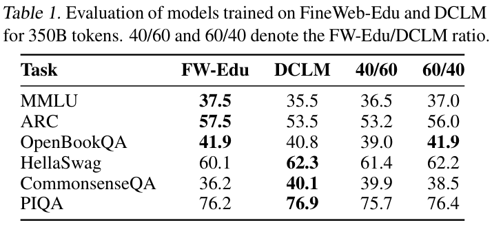
〔接上页的退火设置〕对于数学，我们使用由待评估数据集的 60B tokens 与 checkpoint 此前混合数据的 40B tokens 组成的混合进行退火。对于代码消融，我们在 200B tokens 上进行退火，均匀分配到 15 种最常用的编程语言中，每种约 14B tokens。我们使用 lighteval，在 GSM8K（Cobbe et al., 2021）、MATH（Hendrycks et al., 2021）和 MMLU-STEM 上评估数学消融模型的数学能力，并使用 BigCode-Evaluation-Harness，在 HumanEval（Chen et al., 2021）与 MultiPL-E（Cassano et al., 2022）上评估代码消融模型。
Common Crawl 的网页文本一直是常用的预训练数据源，近期基于分类器的过滤技术显著改善了预训练数据质量（Dubey et al., 2024; Abdin et al., 2024b;a; Kong et al., 2024）。采用分类器过滤的两个突出开放数据集是 FineWeb-Edu（Penedo et al., 2024a）和 DCLM（Li et al., 2024c）。FineWeb-Edu 包含 1.3T tokens；分类器根据 Llama3-70B-Instruct（Dubey et al., 2024）生成的标注训练，并将这些内容判定为具有“教育性”。DCLM 包含 3.8T tokens，使用 fastText 分类器（Joulin et al., 2016a;b）过滤；该分类器的训练数据来自 OpenHermes 2.5（Teknium, 2023a）的指令遵循数据，以及 Reddit 的 r/ExplainLikeImFive（ELI5）社区中的高分帖子。分别从 FineWeb-Edu 与 DCLM 中取 350B tokens 训练消融模型，得到表 1 所示的性能。我们发现，FineWeb-Edu 在教育类基准 MMLU、ARC 和 OpenBookQA 上得分更高，而 DCLM 在 HellaSwag 和 CommonsenseQA 上表现更好。这与数据集的内容一致：FineWeb-Edu 优先选择教育材料，而 DCLM 包含更多样化、偏对话风格的内容。
鉴于 FineWeb-Edu 与 DCLM 的优势互补，我们探索了混合二者能否进一步提升性能。测试不同的比例后，我们发现 60% FineWeb-Edu 和 40% DCLM 的混合效果良好，如表 1 所示：它在 MMLU、ARC 和 OpenBookQA 上几乎达到 FineWeb-Edu 的表现，同时在 HellaSwag 上与 DCLM 的结果相当，在 CommonSenseQA 上也接近 DCLM 的表现。合并这些数据集可得到 5.1T tokens 的英文文本。
专门的数学预训练数据对于形成扎实的数学理解至关重要。近期研究表明，将精心整理的 Common Crawl 数学内容与有针对性的过滤技术结合，能够显著增强语言模型的数学推理能力（Dubey et al., 2024; Yang et al., 2024c; Shao et al., 2024; Han et al., 2024）。
我们比较了两个领先的公开数学数据集：OpenWebMath（OWM）（Paster et al., 2023）和 InfiMM-WebMath（Han et al., 2024）。OWM 包含 12B tokens，通过从 Common Crawl 中过滤数学相关内容构建，并使用专门的文本提取流水线来保留数学格式与公式。InfiMM-WebMath 包含 40B 文本 tokens，其作者证明它的性能可以媲美 DeepSeekMath 的私有数据集（Shao et al., 2024）。
我们按照第 3.1 节的设置，在 OWM 和 InfiMM-WebMath 上进行了退火消融，发现 InfiMM-WebMath 在 GSM8K 上的峰值准确率为 14%，OWM 为 10%；而 OWM 在 MATH 上略优于 InfiMM-WebMath。完整评测曲线见附录 C.1。尽管使用了 60B 数学 tokens 进行训练，即 OWM 的 5 个 epoch 和 InfiMM-WebMath 的 1.5 个 epoch，性能仍落后于先进的专有小模型（Yang et al., 2024b）。进一步分析指出了两个关键局限：数据集规模不足，以及对分步数学推理关注不足，同时过多包含侧重高阶概念的学术论文。
OWM 和 InfiMM-WebMath 的上述问题促使我们开发 FineMath1：一个包含最多 54B tokens 的数学数据集合，通过基于分类器的过滤，侧重数学推导与推理。
我们首先使用 Resiliparse 从 Common Crawl WARC 文件中提取文本，覆盖 FineWeb 数据集的全部 5.8B 个唯一 URL；这些 URL 是 Common Crawl 的 75B 个唯一 URL 的子集。随后采用 FineWeb-Edu 的过滤方法，使用 Llama-3.1-70B-Instruct（Dubey et al., 2024）以及附录 C.2 的提示词，按 3 分制对内容评分，其中 1 分表示包含一些数学〔续下页〕
〔接上页〕内容，3 分表示包含难度适当的分步解题过程。使用这些银标准标签训练分类器之后，我们识别出至少包含 10 个质量得分不低于 2 的页面的域名。为扩大域名覆盖范围，我们还加入了在 OWM 或 InfiMM-WebMath 中至少有 10 个 URL 的域名。我们从 Common Crawl 索引中，检索出属于这份域名列表的总计 7.7B 个 URL：分类器识别出 5.7B 个，OWM 提供 0.6B 个，InfiWebMath 提供 1.3B 个。随后，我们使用 OWM 流水线重新提取所有已识别页面，保留 LaTeX 格式，并移除完全由模板内容组成的页面，得到 7.1B 个页面，包含 6.5T tokens。
为了只保留高质量数学内容，我们再次使用基于 Llama-3.1-70B-Instruct 标注训练的分类器，采用 5 分制提示词（附录 C.3），专门筛选包含推理以及初中到高中水平内容的页面。需要说明的是，InfiMM-WebMath 使用了类似的分类器过滤流水线，但其提示词没有针对同样类型的内容。分类之后，我们使用带 10 个哈希的单带 MinHash LSH（Broder, 1997）进行去重，并使用 fastText 语言分类（Joulin et al., 2016a;b）只保留英文内容。
最终，我们开发了 FineMath 的多个版本，包括只保留得分为 4–5 的样本的 FineMath4+（10B tokens，6.7M 文档），以及保留得分为 3–5 的样本的 FineMath3+（34B tokens，21.4M 文档）。我们还将同一个分类器应用于 InfiMM-WebMath，得到 Infi-WebMath4+（8.5B tokens，6.3M 文档）和 Infi-WebMath3+（20.5B tokens，13.9M 文档）。与 Yang et al. (2024c) 类似，我们针对 GSM8K、MATH 和 MMLU 对每个数据集进行去污染，使用 13-gram 匹配，以及与最长公共子序列的最小重叠比例 0.6。
图 1 展示了 FineMath 的退火消融。所有 FineMath 子集在 GSM8K、MATH 和 MMLU-STEM 上都稳定优于 OWM 与 InfiMM-WebMath。与 InfiMM-WebMath 相比，FineMath4+ 在 GSM8K 上达到 2 倍表现，在 MATH 上达到 6 倍表现，体现了保留包含推理的高质量数学内容的重要性。此外，Infi-WebMath4+ 优于 InfiMM-WebMath，但在 80B tokens 后进入平台期，约为 10 个 epoch；这可能由数据重复造成，而 FineMath4+ 未出现这一趋势。
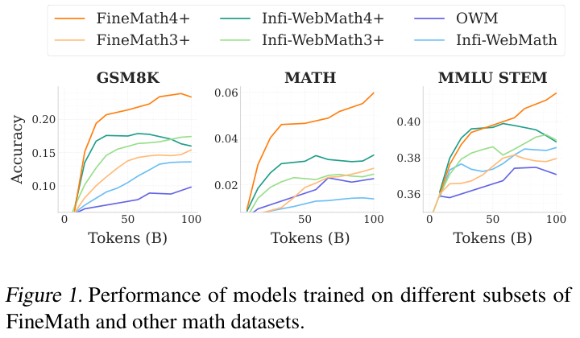
代码生成与理解正成为现代 LLM 的必要能力，支持代码补全、调试和软件设计等多种用途。虽然专门的代码模型（Lozhkov et al., 2024; Bai et al., 2023; Roziere et al., 2023）针对这些任务进行优化，通用 LLM 也越来越多地被部署为编程助手。此外，近期研究表明，在预训练中加入代码数据，不仅增强代码相关能力，也改善自然语言推理和世界知识（Aryabumi et al., 2024）。The Stack 数据集是先进的开放代码数据集（Li et al., 2023a; Kocetkov et al., 2022），包括：Stack v1，来自公开 GitHub 仓库的约 3TB 源代码；StarCoderData（Li et al., 2023a; Kocetkov et al., 2022; Lozhkov et al., 2024），包含 80 种编程语言、经过过滤的 250 billion tokens 子集；Stack v2，来自 Software Heritage 代码档案的约 32TB 数据；以及 StarCoder2Data，即 StarCoder2 模型的训练语料（Lozhkov et al., 2024），包含超过 600 种编程语言的 900 billion tokens。
近期工作表明，FineWeb-Edu 基于分类器的过滤策略，也可有效应用于代码数据（Wei et al., 2024b; Allal et al., 2024）。因此，我们构建了 Stack-Edu，这是 StarCoder2Data 的过滤版本，侧重具有教育价值、文档完善的代码。具体而言，我们选择 StarCoder2Data 中规模最大的 15 种编程语言，以适应小模型的容量限制（Lozhkov et al., 2024），并确保消融实验覆盖相应基准。这一子集包含约 450 billion tokens。随后，我们使用 StarEncoder 模型（Li et al., 2023a），基于 Llama3-70B-Instruct（Dubey et al., 2024）生成的合成标注（提示词见附录 D.1），训练了 15 个特定语言的分类器；标注按 0 到 5 分评估教育质量。每个分类器使用 500,000 个样本训练，在以 3 为二分类阈值时，大多数语言的 F1 分数超过 0.7。
为了评估 Stack-Edu，我们按照第 3.1 节开展退火消融。使用阈值 3 过滤，在保留足够数据的同时改善了大多数语言的表现，不过 Java 使用阈值 2 时效果更好。由于 MultiPL-E 基准不包含 Markdown，我们无法定量确定该数据集的阈值，因此基于定性分析使用阈值 3。最终的 Stack-Edu 数据集在 15 种语言中包含约 125B tokens，见附录 D.2。表 2 展示了按规模排名前 4 的编程语言的统计信息，以及我们的〔续下页〕
〔接上页〕教育性过滤对 MultiPL-E 表现的影响。
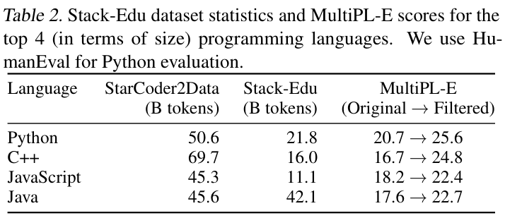
语言模型预训练的近期趋势显示，训练时长明显增加，尤其是较小的模型（Yang et al., 2024a;b; AI@Meta, 2024b）。虽然这一策略偏离 Chinchilla 最优原则（Hoffmann et al., 2022），但带来的性能提升和推理成本下降，使延长训练成为值得的权衡（de Vries, 2023）。例如，Qwen2-1.5B 使用 7 万亿 tokens 训练，Qwen2.5-1.5B 使用 18 万亿 tokens，而从剪枝的 8B 模型得到的 Llama3.2-1B，则通过蒸馏在 9 万亿 tokens 上训练（Yang et al., 2024a;b; AI@Meta, 2024b）。构建 SmolLM2 时，我们在 11 万亿 tokens 上训练，约相当于所收集数据集的两个 epoch，并采用多阶段训练方法，而不是在整个预训练期间使用固定的数据集混合。这一设计遵循四个关键原则：（1）性能驱动的干预：监测关键基准的评测指标，并调整数据集混合以解决具体的能力瓶颈；（2）在退火阶段提高高质量数学和代码数据的采样比例，将 FineMath 和部分 Stack-Edu 等数据集留到最后阶段，以最大化影响（Blakeney et al., 2024; Ai2, 2024）；（3）有策略地引入中等规模数据集，在训练中期加入 OWM、InfiMM-WebMath 和 Stack-Edu 等，以避免早期被更大数据集稀释；（4）避免过度重复数据：遵循 Muennighoff et al. (2023)，我们力求让大多数数据集接近建议的 4–5 个 epoch 阈值。虽然通过多次从头训练来探索不同数据混合调度可能有益，但 SmolLM2 预训练的高成本——约 250,000 美元的 GPU 计算资源——促使我们采用“在线”方法。
以下各节将描述训练过程的每个阶段，详细说明数据集混合、选择依据，以及指导干预的观察结果。部分决策依据文献中已有的结论，其他决策则由训练过程中积累的实证认识推动。四个预训练阶段的数据混合见图 2。
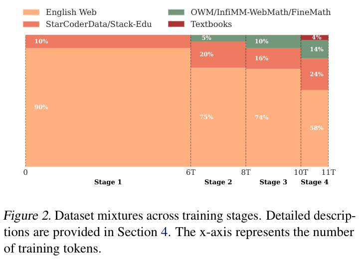
基础模型包含 1.7B 参数，采用 Llama2（Touvron et al., 2023）架构，详见附录 A。我们使用 nanotron 框架，在 256 张 H100 上训练模型，采用 AdamW 优化器，\((\beta,\beta_2)=(0.9,0.95)\)，以及 Warmup Stable Decay（WSD，warmup–稳定–衰减）学习率调度（Hu et al., 2024; Zhai et al., 2022），以避免设定固定的训练时长，见附录 A 图 3。调度先进行 2,000 步 warmup，然后保持峰值学习率 \(5.0\times 10^{-4}\)（稳定阶段），并可在需要时转入衰减阶段，在总训练步数的 10% 内将学习率降至零（Hägele et al., 2024）。我们使用 Allal et al. (2024) 的 tokenizer，词表大小为 49,152 tokens，使用由 70% FineWeb-edu、15% Cosmopedia-v2、8% OpenWebMath、5% StarCoderData 和 2% StackOverflow 组成的混合数据训练。
在 SmolLM2 预训练的第一个阶段（0 到 6T tokens），我们根据英文网页消融实验和已有文献中的认识设计数据集混合。网页数据采用 60% FineWeb-Edu 和 40% DCLM 的比例（原文此处指第 2.2 节），在教育内容与多样化、真实世界问答风格数据之间取得最佳平衡。代码数据遵循 Aryabumi et al. (2024)，加入包含 80 种编程语言、250B tokens 的 StarCoderData，并将其限制为混合总量的 10%，以确保在 11T tokens 上约为 4 个 epoch，同时为后续阶段提高采样比例留出空间。由于数学数据集规模相对较小，阶段 1 未加入数学数据。
训练 6T tokens 后，我们在关键基准上评估 SmolLM2，如表 3 所示。知识和推理表现符合基于英文网页消融结果的预期。然而，我们观察到代码和数学表现总体较差。
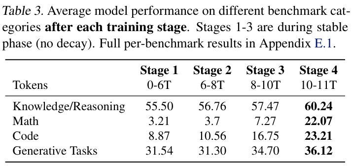
在阶段 2（6T 到 8T tokens），我们以 5% 的比例加入 OWM，并提高代码数据的占比，希望在保持良好知识保留能力的同时，弥补观察到的代码与数学推理不足。低比例加入 OWM，反映了数据集规模较小（12B tokens），以及我们逐步引入数学内容的做法。阶段 2 的最终混合由 75% 英文网页数据组成，保持阶段 1 的 FineWeb-Edu 与 DCLM 的 60/40 比例，另有 20% 代码数据和 5% 数学数据，如图 2 所示。
阶段 2 之后，大多数语言的代码表现改善，验证了提高 StarCoderData 采样比例的决定。加入 OWM 对数学表现没有显著影响，说明后续阶段需要更大、更高质量的数学数据集。除了代码与数学表现之外，如图 6（附录 E.2）所示，我们观察到，使用多项选择格式时，MMLU 准确率高于随机水平（>25%）。多项选择格式（MCF）指显式输出 “A”“B”“C” 或 “D” 中的一个选项，而不是像填空格式那样计算不同答案的似然。这与以往发现小模型难以处理 MCF 的工作形成对照（Gu et al., 2024; Du et al., 2024），表明对小模型进行长时间训练，可能使其获得通常与更大模型相关的能力（Blakeney et al., 2024; Gu et al., 2024; Du et al., 2024）。为进一步优化 MMLU 表现，我们通过额外的退火消融重新审视英文数据集混合，发现此阶段相对 FineWeb-Edu 提高 DCLM 的比例，可略微改善 MMLU MCF。
在稳定阶段的第三个也是最后一个阶段（8T 到 10T tokens，退火开始之前），我们加入 InfiMM-WebMath 中纯文本英文部分，与 OWM 一起使数学数据总占比达到约 10%，如图 2 所示。英文网页数据方面，我们重新审视消融结果，将 FineWeb-Edu 与 DCLM 的比例调整为 40/60。代码方面，我们用 Stack-Edu 替换 StarCoderData（第 3.4 节）。对于 Stack-Edu 中少于 4B tokens 的语言，即 TypeScript、Shell、Swift、Go、Rust 和 Ruby，我们使用相应的 StarCoder2Data 子集。还加入 StarCoder2（Lozhkov et al., 2024）的 Jupyter Notebooks，它们提供代码与解释交错的丰富、具有上下文的示例，从而增强模型对编程任务的推理。
虽然加入这些新数据集改善了多个基准的表现，但我们在这一阶段观察到明显的 loss spike；即使回退训练并跳过与尖峰相关的数据，它仍然存在（Chowdhery et al., 2023; Almazrouei et al., 2023）。确切原因仍未确定，不过大多数评测指标在这一阶段结束前恢复。
最后阶段在总训练时长的 10% 内，将学习率线性衰减至 0（从 10T 到 11T tokens）（Hägele et al., 2024）。遵循 Blakeney et al. (2024)，我们引入质量最高的数学数据集 InfiWebMath-3+ 与 FineMath 4+。此外，将混合的 0.08% 分配给 OWM，0.02% 分配给 AugGSM8K（Li et al., 2024a）；后者是 GSM8K 基准训练集的增强版本，已成为近期预训练数据集中的常见组成部分（Achiam et al., 2023; Dubey et al., 2024; Ai2, 2024）。数学内容总计占混合的 14%。我们扩展 Stack-Edu，以包含阶段 3 未覆盖的其他编程语言，并将其占比设为 24%。我们保持编程语言间的自然分布，为 Python 分配较高比例。其余混合包括 58% 英文网页数据，保持 DCLM 相对于 FineWeb-Edu 的较高比例，以及 4% Cosmopedia v2（Allal et al., 2024），后者提供 30B tokens 的高质量合成教材、博客文章和故事。
阶段 4 后，所有基准任务都有改善，而代码表现显著提升，数学表现尤为突出，验证了专门针对这些领域的数据混合。
为了支持长上下文应用，我们遵循标准做法（Gao et al., 2024），将上下文长度从 2k 扩至 8k tokens：取阶段 4 的一个中间 checkpoint，即最后 75 billion tokens 训练之前，使用不同的数据混合和 130k 的 RoPE 值继续训练。调整后的混合包含 40% 长上下文文档，即至少 8k tokens，分别来自 DCLM（10%）、FineWeb-Edu（10%）和 Dolma 的书籍子集（20%）（Soldaini et al., 2024）；剩余 60% 遵循阶段 4 的混合。完成这一步后，得到最终的 SmolLM2 基础模型。
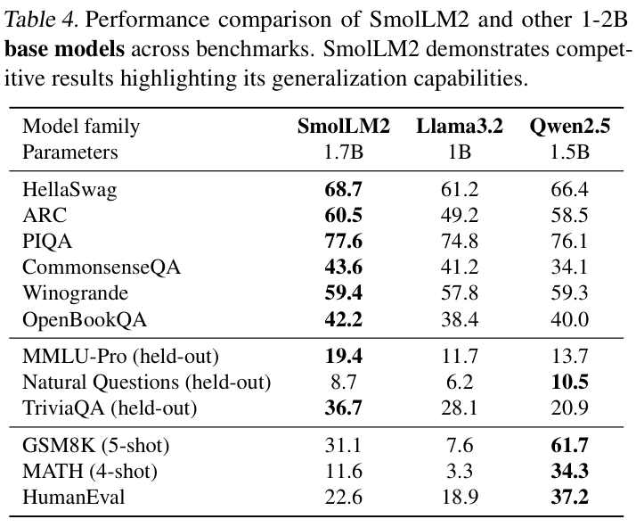
我们在广泛的基准上评估最终的 SmolLM2 基础模型，并与现有同等规模的先进模型 Qwen2.5-1.5B（Yang et al., 2024b）和 Llama3.2-1B（AI@Meta, 2024a）比较。评测使用 lighteval，除非另有说明，否则采用零样本设置。
表 4 的评测结果显示 SmolLM2 基础模型具有出色性能，在 HellaSwag 和 ARC 上优于 Qwen2.5 基础模型。SmolLM2 在训练期间未监测的留出基准上也表现出色，例如 MMLU-Pro（Wang et al., 2024c）、TriviaQA（Joshi et al., 2017）和 Natural Questions（NQ，Kwiatkowski et al., 2019）。值得关注的是，该模型在 MMLU-Pro 上比 Qwen2.5-1.5B 高出近 6 个百分点，进一步验证了泛化能力。在数学和代码基准上，SmolLM2 具有竞争力。虽然落后于 Qwen2.5-1.5B，但 SmolLM2 在 GSM8K、MATH 和 HumanEval 上优于 Llama3.2-1B。我们观察到，上下文长度扩展后，性能几乎没有下降，同时 HELMET（Yen et al., 2024）和 Needle in the Haystack（NIAH）（Kamradt, 2024）结果显示出色表现，见附录 G。这些结果体现了所整理数据集、数据混合与训练阶段的有效性。
训练 SmolLM2 基础模型后，我们遵循当前标准做法，通过指令微调和偏好学习开展后训练，以最大化性能和实用性。后训练既使用现有数据集，也使用了名为 SmolTalk 的新指令微调数据集。
虽然 SmolLM2 基础模型优于 1–2B 参数范围内的其他先进基础模型，但在 MagPie-Pro（Xu et al., 2024）或 OpenHermes2.5（Teknium, 2023b）等公开数据集上微调后，其表现低于这些其他模型的后训练版本。这一观察促使我们开发 SmolTalk2，一个新的指令遵循数据集，将精心选择的现有数据集与我们开发的新合成数据集组合，包括 Magpie-Ultra 对话数据集，以及针对特定能力的其他专门数据集 Smol-Constraint、Smol-Rewrite 和 Smol-Summarization。所有数据集都使用 Distilabel（Bartolomé Del Canto et al., 2024）生成。
MagPie-Ultra 是使用 Xu et al. (2024) 的两步提示方法创建的多轮数据集。MagPie 使用 Llama-3-70B-Instruct，在没有特定系统提示词的情况下生成两轮对话；MagPie-Ultra 则使用规模更大、能力更强的 Llama-3.1-405B-Instruct-FP8（Dubey et al., 2024）。我们还加入系统提示词来指导生成，得到包含 1M 个样本、三轮对话的均衡数据集。随后，使用更小的 Llama 模型 Llama-3.1-8B-Instruct 和 Llama-Guard-3-8B 进一步过滤，确保生成指令的质量与安全性。我们还使用 ArmoRM（Wang et al., 2024b;a）对对话质量评分并过滤，以及 gte-large-en-v1.5（Zhang et al., 2024; Li et al., 2023c）去除语义相似的对话。
我们在表 10（附录 F）中将 MagPie-Ultra 与现有公开 SFT 数据集进行比较。评测套件包含指令遵循和对话基准 IFEval（Zhou et al., 2023）与 MT-Bench（Zheng et al., 2023），使用 ARC Challenge 评估推理、MMLU-Pro 评估知识，以及 GSM8K 和 MATH 评估数学。我们的数据集在大多数基准上优于 MagPie-Pro，在 IFEval 与 MT-Bench 上大幅超过 OpenHermes2.5 和 UltraChat（Ding et al., 2023）。
我们开发了额外的特定任务数据集，以进一步增强模型遵循详细约束指令（Smol-Constraint）、摘要（Smol-Summarization）和改写（Smol-Rewrite）的能力。Smol-Constraint 包含 36k 条具有详细约束的指令，类似 IFEval（Zhou et al., 2023）中的约束。使用 Xu et al. (2024) 的方法和有针对性的系统提示词，〔续下页〕
〔接上页〕我们使用 Qwen2.5-72B-Instruct（Yang et al., 2024b）生成了 550k 条指令，以及对应的回答。随后过滤掉包含冲突约束的生成指令或错误回答，得到 56.3k 个指令–回答对；再针对 IFEval 去污染，使用 10 n-gram 重叠检测，得到 36k 对。对于 Smol-Summarization 和 Smol-Rewrite，我们首先生成高质量源文本，作为摘要和改写任务的基础。通过 PersonaHub（Ge et al., 2024）和 FinePersonas 数据集的人物设定（Argilla, 2024; Chan et al., 2024），合成多样化的电子邮件、推文、LinkedIn 帖子和笔记。这样，我们可以使用特定的系统提示词和人物设定描述来提示 Qwen2.5-72B-Instruct，生成具有不同写作风格、主题和视角的文本。随后提示 Qwen2.5-72B-Instruct，对给定文本进行摘要和改写，得到约 1M 份摘要和 600k 份改写文本。将这三个 Smol- 数据集加入 MagPie-Ultra，形成 MagPie-Ultra+，进一步提升了 IFEval 表现，如表 10（附录 F）所示。
为了改善数学推理，我们使用由 80% 通用指令数据（MagPie Ultra + Smol-Constraint、Smol-Rewrite、Smol-Summarization）和 20% 来自不同来源的数学数据组成的混合进行微调，以评估公开数学指令数据集。表 10（附录 F）的结果体现了数据集的互补优势：NuminaMath-CoT（Li et al., 2024b）在 MATH 与 MT-Bench 上表现出色；也被 OpenHermes2.5 收录的 MetaMathQA（Yu et al., 2023）则改善了 GSM8K 的结果。基于这些发现，我们将两个数据集的组合加入 SmolTalk。
代码生成方面，我们使用 Self-OSS-Starcoder2-Instruct（Wei et al., 2024a），它包含 50k 个高质量 Python 指令–回答对。为了支持系统提示词，我们从 SystemChats2.0（Computations, 2024）随机选择 30k 个样本；函数调用方面，则从 APIGen-Function-Calling（Liu et al., 2024）加入 80k 个样本。此外，为保持长上下文任务上的出色性能，我们加入 LongAlign（Bai et al., 2024）的英文子集，包含 3.7k 个样本，每个样本有 8k–16k tokens。我们还加入随机选择的 100k 个 OpenHermes2.5 样本，因为它在知识（MMLU-Pro）方面表现强；Everyday-Conversations（Face, 2024）的 2.2k 个日常多轮交互；以及用于改写的 Explore-Instruct（Wan et al., 2023）。我们发现，按上述样本数加入这些数据集，能有效增强目标能力，同时保持其他基准上的出色表现。
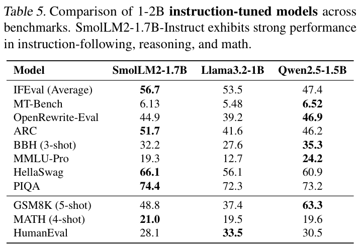
表 9（附录 F）展示了 SmolTalk 的最终组成。我们在 SmolTalk 上对 SmolLM2 基础模型进行 2 个 epoch 的 SFT，全局 batch 大小为 128，序列长度为 8192，学习率为 \(3.0\times 10^{-4}\)。SFT 阶段后的评测结果见表 10（附录 F）。
偏好学习采用 DPO（Rafailov et al., 2024）。我们尝试了多种公开合成反馈数据集（Ivison et al., 2024），包括 UltraFeedback（Cui et al., 2024）、UltraInteract（Yuan et al., 2024）、Capybara（Daniele & Suphavadeeprasit, 2023）和 ORCA（Lv et al., 2023）。UltraFeedback 在各个基准上最稳定有效，改善了 MT-Bench、MMLU-Pro 与 MATH。我们训练 2 个 epoch，学习率为 \(1.0\times 10^{-6}\)，beta 为 0.5，全局 batch 大小为 128，序列长度为 1024 tokens。完成最终 DPO 训练阶段后，得到 SmolLM2 指令模型。与 Dubey et al. (2024) 所述一致，使用短上下文数据进行 DPO，并未影响模型的 8k 上下文能力。
我们评估最终的 SmolLM2 指令版本，并与 Qwen2.5-1.5B 和 Llama3.2-1B 的指令版本比较，结果见表 5。SmolLM2-Instruct 展现出强大的指令遵循能力，在 IFEval 上大幅优于 Qwen2.5-1.5B-Instruct；在 MT-Bench 和用于文本改写的 OpenRewrite-Eval（Shu et al., 2024）上具有竞争力；GSM8K 与 MATH 分数也证明了其出色数学能力。这些结果体现了 SmolLM2 在各种任务之间的泛化能力，展示了它成为能力出色的聊天助手的潜力。
除 SmolLM2-1.7B 外，我们还训练了两个更小的模型：SmolLM2-360M（360M 参数，在 4T tokens 上训练）与 SmolLM2-135M（135M 参数，在 2T tokens 上训练），它们同样在各自规模类别中达到先进水平。考虑到容量更小、训练成本更低，我们在目标训练长度下重新开展数据消融，以确定最有效的数据混合。我们发现，用 FineWeb-Edu 分类器过滤 DCLM，移除得分为 0 的样本，降低得分为 1 和 2 的样本的采样比例，效果最好。SmolLM2-1.7B 采用多阶段训练策略，而这些更小的模型则受益于使用持续高质量数据的单阶段训练。我们从一开始就加入 Stack-Edu，以及 InfiMM-WebMath、FineMath 和 Cosmopedia。这些模型与 SmolLM2-1.7B 具有相同架构，但使用 GQA，采用 WSD 调度器，衰减比例为 20%，学习率为 \(3.0\times 10^{-3}\)。后训练方面，我们使用过滤版 SmolTalk3 进行 SFT，移除复杂的指令遵循任务，例如函数调用，以及 MagPie-Ultra 中的困难样本，以更好地匹配模型容量。最后，使用 UltraFeedback 进行 DPO 训练，在保持连贯性和有帮助性的同时，优化模型的指令遵循能力。SmolLM2-360M 和 135M 的更多细节见各自模型卡4,5。
SmolLM2 通过精心的数据集整理与多阶段训练相结合，推进了开放小型语言模型的先进水平。我们的方法强调，高质量专门数据集对小模型在各种基准上获得出色性能具有关键作用。FineMath、Stack-Edu 和 SmolTalk 的开发，解决了现有公开数据集的局限，提升了推理、数学和指令遵循任务上的能力。为支持未来的研究与开发，我们发布了 SmolLM2，以及训练中使用的数据集和代码。这些资源为训练性能出色的小型语言模型提供了全面基础，使更广泛的研究者和应用能够使用它们。
如果没有合作伙伴和同事的贡献与支持，本工作就不可能完成：
我们还感谢更广泛的研究社区和开源生态推动合作与创新；没有它们，本项目就不可能完成。
本文介绍的工作旨在推进机器学习领域的发展。我们的工作可能带来许多潜在社会影响，但我们认为没有需要在此特别强调的影响。
3 smol-smoltalk 数据集。4 SmolLM2-360M 模型卡。5 SmolLM2-135M 模型卡。
Claudebot 文档。https://darkvisitors.com/agents/claudebot。访问日期：2024-06-05。
Common Crawl。https://commoncrawl.org/。访问日期：2024-06-05。
OpenAI GPTBot 文档。https://platform.openai.com/docs/gptbot。访问日期：2024-06-05。
Abdin, M., Aneja, J., Awadalla, H., Awadallah, A., Awan, A. A., Bach, N., Bahree, A., Bakhtiari, A., Bao, J., Behl, H., et al. Phi-3 技术报告：可在手机本地运行的高能力语言模型。arXiv 预印本 arXiv:2404.14219, 2024a。
Abdin, M., Aneja, J., Behl, H., Bubeck, S., Eldan, R., Gunasekar, S., Harrison, M., Hewett, R. J., Javaheripi, M., Kauffmann, P., et al. Phi-4 技术报告。arXiv 预印本 arXiv:2412.08905, 2024b。
Achiam, J., Adler, S., Agarwal, S., Ahmad, L., Akkaya, I., Aleman, F. L., Almeida, D., Altenschmidt, D., Altman, S., Anadkat, S., et al. GPT-4 技术报告。arXiv 预印本 arXiv:2303.08774, 2023。
Ai2. OLMo 2：迄今最佳的完全开放语言模型. https://allenai.org/blog/olmo2, 2024. 博客文章。
AI@Meta. Llama 3.2：用开放、可定制的模型革新端侧 AI 与视觉, 2024a. URL https://ai.meta.com/blog/ llama-3-2-connect-2024-vision-edge-mobile-devices/.
AI@Meta. Llama 3.2 模型卡, 2024b. URL https://github.com/meta-llama/ llama-models/blob/main/models/llama3_ 2/MODEL_CARD.md.
Allal, L. B., Lozhkov, A., Bakouch, E., von Werra, L., and Wolf, T. SmolLM：极快且表现出色, 2024.
Almazrouei, E., Alobeidli, H., Alshamsi, A., Cappelli, A., Cojocaru, R., Debbah, M., Goffinet, É., Hesslow, D., Launay, J., Malartic, Q., et al. Falcon 开放语言模型系列. arXiv 预印本 arXiv:2311.16867, 2023.
Argilla. FinePersonas-v0.1 数据集. https: //huggingface.co/datasets/argilla/ FinePersonas-v0.1, 2024. 可在 Hugging Face Datasets 获取。
Aryabumi, V., Su, Y., Ma, R., Morisot, A., Zhang, I., Locatelli, A., Fadaee, M., Üstün, A., and Hooker, S. 加入代码，还是不加入？探索代码在预训练中的影响. arXiv 预印本 arXiv:2408.10914, 2024.
Azerbayev, Z., Schoelkopf, H., Paster, K., Santos, M. D., McAleer, S., Jiang, A. Q., Deng, J., Biderman, S., and Welleck, S. Llemma：面向数学的开放语言模型. arXiv 预印本 arXiv:2310.10631, 2023.
Bai, J., Bai, S., Chu, Y., Cui, Z., Dang, K., Deng, X., Fan, Y., Ge, W., Han, Y., Huang, F., et al. Qwen 技术报告. arXiv 预印本 arXiv:2309.16609, 2023.
Bai, Y., Kadavath, S., Kundu, S., Askell, A., Kernion, J., Jones, A., Chen, A., Goldie, A., Mirhoseini, A., McKinnon, C., et al. Constitutional AI：通过 AI 反馈实现无害性. arXiv 预印本 arXiv:2212.08073, 2022.
Bai, Y., Lv, X., Zhang, J., He, Y., Qi, J., Hou, L., Tang, J., Dong, Y., and Li, J. LongAlign：LLM 的长上下文对齐配方. arXiv 预印本 arXiv:2401.18058, 2024.
Bartolomé Del Canto, Á., Martín Blázquez, G., Piqueres Lajarín, A., and Vila Suero, D. Distilabel：借助 LLM 并为 LLM 构建数据集的 AI 反馈（AIF）框架. https://github.com/argilla-io/ distilabel, 2024.
Bisk, Y., Zellers, R., Bras, R. L., Gao, J., and Choi, Y. PIQA：用自然语言推理物理常识, 2019.
Blakeney, C., Paul, M., Larsen, B. W., Owen, S., and Frankle, J. 你的数据令人愉悦吗？训练末期提高领域采样比例带来的性能增益. arXiv 预印本 arXiv:2406.03476, 2024.
Broder, A. Z. 论文档的相似性与包含关系. Proceedings. Compression and Complexity of SEQUENCES 1997 (Cat. No.97TB100171), pp. 21–29, 1997.
Brown, T., Mann, B., Ryder, N., Subbiah, M., Kaplan, J., Dhariwal, P., Neelakantan, A., Shyam, P., Sastry, G., Askell, A., et al. 语言模型是少样本学习者. arXiv 预印本 arXiv:2005.14165, 2020.
Cassano, F., Gouwar, J., Nguyen, D., Nguyen, S., Phipps- Costin, L., Pinckney, D., Yee, M.-H., Zi, Y., Anderson, C. J., Feldman, M. Q., et al. MultiPL-E：评测神经代码生成的可扩展方法. arXiv 预印本 arXiv:2208.08227, 2022.
Chan, X., Wang, X., Yu, D., Mi, H., and Yu, D. 借助 1,000,000,000 个人物设定扩展合成数据生成, 2024. URL https://arxiv.org/abs/2406.20094.
Chen, M., Tworek, J., Jun, H., Yuan, Q., Pinto, H. P. D. O., Kaplan, J., Edwards, H., Burda, Y., Joseph, N., Brockman, G., et al. 评估使用代码训练的 LLM. arXiv 预印本 arXiv:2107.03374, 2021.
Chowdhery, A., Narang, S., Devlin, J., Bosma, M., Mishra, G., Roberts, A., Barham, P., Chung, H. W., Sutton, C., Gehrmann, S., et al. PaLM：使用 Pathways 扩展语言建模. Journal of Machine Learning Research, 24(240):1–113, 2023.
Clark, K. BERT 在关注什么？BERT attention 分析. arXiv 预印本 arXiv:1906.04341, 2019.
Clark, P., Cowhey, I., Etzioni, O., Khot, T., Sabharwal, A., Schoenick, C., and Tafjord, O. 认为你已解决问答问题？试试 ARC，即 AI2 推理挑战, 2018.
Cobbe, K., Kosaraju, V., Bavarian, M., Chen, M., Jun, H., Kaiser, L., Plappert, M., Tworek, J., Hilton, J., Nakano, R., et al. 训练验证器以解决数学应用题. arXiv 预印本 arXiv:2110.14168, 2021.
Computations, C. SystemChat-2.0 数据集。 https: //huggingface.co/datasets/ cognitivecomputations/SystemChat-2.0, 2024.
Cui, G., Yuan, L., Ding, N., Yao, G., He, B., Zhu, W., Ni, Y., Xie, G., Xie, R., Lin, Y., et al. UltraFeedback：借助规模化 AI 反馈提升语言模型. In Forty-first International Conference on Machine Learning, 2024.
Daniele, L. and Suphavadeeprasit. Amplify-instruct：为高效 LLM 训练合成多样化多轮对话. arXiv 预印本 arXiv:（即将发布）, 2023. URL https://huggingface.co/ datasets/LDJnr/Capybara.
de Vries, H. 选择小模型，否则就回家. https://www.harmdevries.com/post/ model-size-vs-compute-overhead/, 2023.
Ding, N., Chen, Y., Xu, B., Qin, Y., Zheng, Z., Hu, S., Liu, Z., Sun, M., and Zhou, B. 通过扩展高质量指令对话增强聊天语言模型. arXiv 预印本 arXiv:2305.14233, 2023.
Du, Z., Zeng, A., Dong, Y., and Tang, J. 从损失视角理解语言模型的涌现能力. arXiv 预印本 arXiv:2403.15796, 2024.
Dua, D., Wang, Y., Dasigi, P., Stanovsky, G., Singh, S., and Gardner, M. DROP：要求对段落进行离散推理的阅读理解基准. arXiv 预印本 arXiv:1903.00161, 2019.
Dubey, A., Jauhri, A., Pandey, A., Kadian, A., Al-Dahle, A., Letman, A., Mathur, A., Schelten, A., Yang, A., Fan, A., et al. Llama 3 模型家族. arXiv 预印本 arXiv:2407.21783, 2024.
Face, H. 面向 LLM 的日常对话. https://huggingface. co/datasets/HuggingFaceTB/ everyday-conversations-llama3.1-2k, 2024.
Gao, T., Wettig, A., Yen, H., and Chen, D. 如何（有效地）训练长上下文语言模型, 2024. URL https://arxiv.org/abs/2410.02660.
Ge, T., Chan, X., Wang, X., Yu, D., Mi, H., and Yu, D. 借助 1,000,000,000 个人物设定扩展合成数据生成. arXiv 预印本 arXiv:2406.20094, 2024.
Groeneveld, D., Beltagy, I., Walsh, P., Bhagia, A., Kinney, R., Tafjord, O., Jha, A. H., Ivison, H., Magnusson, I., Wang, Y., et al. OLMo：加速语言模型科学研究. arXiv 预印本 arXiv:2402.00838, 2024.
Gu, Y., Tafjord, O., Kuehl, B., Haddad, D., Dodge, J., and Hajishirzi, H. OLMES：语言模型评测标准. arXiv 预印本 arXiv:2406.08446, 2024.
Gunter, T., Wang, Z., Wang, C., Pang, R., Narayanan, A., Zhang, A., Zhang, B., Chen, C., Chiu, C.-C., Qiu, D., et al. Apple Intelligence 基础语言模型. arXiv 预印本 arXiv:2407.21075, 2024.
Hägele, A., Bakouch, E., Kosson, A., Allal, L. B., Von Werra, L., and Jaggi, M. 超越固定训练时长的 scaling laws 与计算最优训练. arXiv 预印本 arXiv:2405.18392, 2024.
Han, X., Jian, Y., Hu, X., Liu, H., Wang, Y., Fan, Q., Ai, Y., Huang, H., He, R., Yang, Z., et al. InfiMM-WebMath-40B：推进多模态预训练以增强数学推理. arXiv 预印本 arXiv:2409.12568, 2024.
Hendrycks, D., Burns, C., Basart, S., Zou, A., Mazeika, M., Song, D., and Steinhardt, J. 衡量大规模多任务语言理解, 2021.
Hoffmann, J., Borgeaud, S., Mensch, A., Buchatskaya, E., Cai, T., Rutherford, E., Casas, D. d. L., Hendricks, L. A., Welbl, J., Clark, A., et al. 训练计算最优的 LLM. arXiv 预印本 arXiv:2203.15556, 2022.
Hu, S., Tu, Y., Han, X., He, C., Cui, G., Long, X., Zheng, Z., Fang, Y., Huang, Y., Zhao, W., Zhang, X., Thai, Z. L., Zhang, K., Wang, C., Yao, Y., Zhao, C., Zhou, J., Cai, J., Zhai, Z., Ding, N., Jia, C., Zeng, G., Li, D., Liu, Z., and Sun, M. MiniCPM：通过可扩展训练策略揭示小型语言模型的潜力, 2024. URL https://arxiv.org/abs/2404.06395.
Ivison, H., Wang, Y., Liu, J., Wu, Z., Pyatkin, V., Lambert, N., Smith, N. A., Choi, Y., and Hajishirzi, H. 剖析 DPO 与 PPO：厘清从偏好反馈学习的最佳实践. arXiv 预印本 arXiv:2406.09279, 2024.
Joshi, M., Choi, E., Weld, D. S., and Zettlemoyer, L. TriviaQA：用于阅读理解的大规模远程监督挑战数据集. arXiv 预印本 arXiv:1705.03551, 2017.
Joulin, A., Grave, E., Bojanowski, P., Douze, M., Jégou, H., and Mikolov, T. fastText.zip：压缩文本分类模型. arXiv 预印本 arXiv:1612.03651, 2016a.
Joulin, A., Grave, E., Bojanowski, P., and Mikolov, T. 高效文本分类技巧集. arXiv 预印本 arXiv:1607.01759, 2016b.
Kamradt, G. Needle-in-a-Haystack：LLM 压力测试. https://github.com/gkamradt/ LLMTestNeedleInAHaystack, 2024.
Kocetkov, D., Li, R., Allal, L. B., Li, J., Mou, C., Ferrandis, C. M., Jernite, Y., Mitchell, M., Hughes, S., Wolf, T., et al. The Stack：3 TB 宽松许可源代码. arXiv 预印本 arXiv:2211.15533, 2022.
Kong, X., Gunter, T., and Pang, R. LLM 引导的文档选择. arXiv 预印本 arXiv:2406.04638, 2024.
Kwiatkowski, T., Palomaki, J., Redfield, O., Collins, M., Parikh, A., Alberti, C., Epstein, D., Polosukhin, I., Devlin, J., Lee, K., et al. Natural Questions：问答研究基准. Transactions of the Association for Computational Linguistics, 7, 2019.
Lee, H., Phatale, S., Mansoor, H., Mesnard, T., Ferret, J., Lu, K. R., Bishop, C., Hall, E., Carbune, V., Rastogi, A., et al. RLAIF 与 RLHF：借助 AI 反馈扩展从人类反馈学习的强化学习. In Forty-first International Conference on Machine Learning.
Lewkowycz, A., Andreassen, A., Dohan, D., Dyer, E., Michalewski, H., Ramasesh, V., Slone, A., Anil, C., Schlag, I., Gutman-Solo, T., et al. 使用语言模型解决定量推理问题. Advances in Neural Information Processing Systems, 35:3843–3857, 2022.
Li, C., Yuan, Z., Yuan, H., Dong, G., Lu, K., Wu, J., Tan, C., Wang, X., and Zhou, C. MuggleMath：评估问题与回答增强对数学推理的影响. In Proceedings of the 62nd Annual Meeting of the Association for Computational Linguistics (Volume 1: Long Papers), pp. 10230–10258, 2024a.
Li, J., Beeching, E., Tunstall, L., Lipkin, B., Soletskyi, R., Huang, S. C., Rasul, K., Yu, L., Jiang, A., Shen, Z., Qin, Z., Dong, B., Zhou, L., Fleureau, Y., Lample, G., and Polu, S. NuminaMath。 [https://huggingface.co/AI-MO/ NuminaMath-CoT](https://github.com/ project-numina/aimo-progress-prize/ blob/main/report/numina_dataset.pdf), 2024b.
Li, J., Fang, A., Smyrnis, G., Ivgi, M., Jordan, M., Gadre, S., Bansal, H., Guha, E., Keh, S., Arora, K., et al. DataComp-LM：寻找下一代语言模型训练集. arXiv 预印本 arXiv:2406.11794, 2024c.
Li, R., Allal, L. B., Zi, Y., Muennighoff, N., Kocetkov, D., Mou, C., Marone, M., Akiki, C., Li, J., Chim, J., et al. StarCoder：愿源码与你同在！ arXiv 预印本 arXiv:2305.06161, 2023a.
Li, Y., Bubeck, S., Eldan, R., Del Giorno, A., Gunasekar, S., and Lee, Y. T. 教材就是你所需要的 II：Phi-1.5 技术报告. arXiv 预印本 arXiv:2309.05463, 2023b.
Li, Z., Zhang, X., Zhang, Y., Long, D., Xie, P., and Zhang, M. 通过多阶段对比学习迈向通用文本 embedding. arXiv 预印本 arXiv:2308.03281, 2023c.
Liu, Z., Hoang, T., Zhang, J., Zhu, M., Lan, T., Kokane, S., Tan, J., Yao, W., Liu, Z., Feng, Y., et al. APIGen：生成可验证、多样化函数调用数据集的自动化流水线. arXiv 预印本 arXiv:2406.18518, 2024.
Loshchilov, I. and Hutter, F. SGDR：带热重启的随机 gradient 下降. arXiv 预印本 arXiv:1608.03983, 2016.
Lozhkov, A., Li, R., Allal, L. B., Cassano, F., Lamy-Poirier, J., Tazi, N., Tang, A., Pykhtar, D., Liu, J., Wei, Y., et al. StarCoder 2 与 The Stack v2：下一代. arXiv 预印本 arXiv:2402.19173, 2024.
Lv, K., Zhang, W., and Shen, H. 在 Intel Gaudi2 上进行 SFT 和 DPO. https://medium.com/ intel-analytics-software/a1197d8a3cd3, 2023. Intel Corporation.
Mihaylov, T., Clark, P., Khot, T., and Sabharwal, A. 一套盔甲能导电吗？用于开卷问答的新数据集. In EMNLP, 2018.
Mishra, S., Khashabi, D., Baral, C., and Hajishirzi, H. 通过自然语言众包指令实现跨任务泛化. arXiv 预印本 arXiv:2104.08773, 2021.
MosaicML. LLM Foundry：Jeopardy 数据集, 2024. URL https://github.com/mosaicml/ llm-foundry/blob/main/scripts/eval/ local_data/world_knowledge/jeopardy_ all.jsonl. 访问日期： 2024-11-10.
Muennighoff, N., Rush, A. M., Barak, B., Scao, T. L., Piktus, A., Tazi, N., Pyysalo, S., Wolf, T., and Raffel, C. 扩展数据受限的语言模型, 2023.
Ouyang, L., Wu, J., Jiang, X., Almeida, D., Wainwright, C., Mishkin, P., Zhang, C., Agarwal, S., Slama, K., Ray, A., et al. 利用人类反馈训练语言模型遵循指令. Advances in neural information processing systems, 35:27730–27744, 2022.
Paster, K., Santos, M. D., Azerbayev, Z., and Ba, J. OpenWebMath：高质量数学网页文本的开放数据集. arXiv 预印本 arXiv:2310.06786, 2023.
Penedo, G., Kydlícek, H., Allal, L. B., Lozhkov, A., Mitchell, M., Raffel, C., von Werra, L., and Wolf, T. FineWeb 数据集：规模化提炼网页中的优质文本数据. ArXiv, abs/2406.17557, 2024a. URL https://api.semanticscholar. org/CorpusID:270711474.
Penedo, G., Malartic, Q., Hesslow, D., Cojocaru, R., Alobeidli, H., Cappelli, A., Pannier, B., Almazrouei, E., and Launay, J. 面向 Falcon LLM 的 RefinedWeb 数据集：仅使用网页数据超越精心整理的语料. In Advances in Neural Information Processing Systems, 2024b.
Petroni, F., Rocktäschel, T., Lewis, P., Bakhtin, A., Wu, Y., Miller, A. H., and Riedel, S. 语言模型能充当知识库吗？ arXiv 预印本 arXiv:1909.01066, 2019.
Radford, A., Wu, J., Child, R., Luan, D., Amodei, D., and Sutskever, I. 语言模型是无监督多任务学习者. 2019.
Rafailov, R., Sharma, A., Mitchell, E., Manning, C. D., Ermon, S., and Finn, C. DPO：你的语言模型其实也是 RM. Advances in Neural Information Processing Systems, 36, 2024.
Raffel, C., Shazeer, N., Roberts, A., Lee, K., Narang, S., Matena, M., Zhou, Y., Li, W., and Liu, P. J. 使用统一的文本到文本 Transformer 探索迁移学习的极限. Journal of machine learning research, 21 (140):1–67, 2020.
Rajpurkar, P., Jia, R., and Liang, P. 知道自己不知道什么：SQuAD 中不可回答的问题. arXiv 预印本 arXiv:1806.03822, 2018.
Reddy, S., Chen, D., and Manning, C. D. CoQA：对话问答挑战. Transactions of the Association for Computational Linguistics, 7:249–266, 2019.
Roberts, A., Raffel, C., and Shazeer, N. 语言模型参数能装入多少知识？ arXiv 预印本 arXiv:2002.08910, 2020.
Rolnick, D., Veit, A., Belongie, S., and Shavit, N. 深度学习对大量标签噪声具有鲁棒性. arxiv 2017. arXiv 预印本 arXiv:1705.10694, 2017.
Roziere, B., Gehring, J., Gloeckle, F., Sootla, S., Gat, I., Tan, X. E., Adi, Y., Liu, J., Sauvestre, R., Remez, T., et al. Code Llama：面向代码的开放基础模型. arXiv 预印本 arXiv:2308.12950, 2023.
Sakaguchi, K., Bras, R. L., Bhagavatula, C., and Choi, Y. WinoGrande：大规模对抗性 Winograd Schema 挑战, 2019.
Sanh, V., Webson, A., Raffel, C., Bach, S. H., Sutawika, L., Alyafeai, Z., Chaffin, A., Stiegler, A., Scao, T. L., Raja, A., et al. 多任务提示训练支持零样本任务泛化. arXiv 预印本 arXiv:2110.08207, 2021.
Shao, Z., Wang, P., Zhu, Q., Xu, R., Song, J., Bi, X., Zhang, H., Zhang, M., Li, Y., Wu, Y., et al. DeepSeekMath：突破开放语言模型数学推理的极限. arXiv 预印本 arXiv:2402.03300, 2024.
Shu, L., Luo, L., Hoskere, J., Zhu, Y., Liu, Y., Tong, S., Chen, J., and Meng, L. RewriteLM：用于文本改写的指令微调 LLM. In Proceedings of the AAAI Conference on Artificial Intelligence, volume 38, pp. 18970–18980, 2024.
Singer, P., Pfeiffer, P., Babakhin, Y., Jeblick, M., Dhankhar, N., Fodor, G., and Ambati, S. S. H2O-Danube-1.8B 技术报告. arXiv 预印本 arXiv:2401.16818, 2024.
Soboleva, D., Al-Khateeb, F., Myers, R., Steeves, J. R., Hestness, J., and Dey, N. SlimPajama：经过清洗和去重的 627B token 版 RedPajama, June 2023. URL https://huggingface.co/ datasets/cerebras/SlimPajama-627B.
Soldaini, L., Kinney, R., Bhagia, A., Schwenk, D., Atkinson, D., Authur, R., Bogin, B., Chandu, K., Dumas, J., Elazar, Y., Hofmann, V., Jha, A. H., Kumar, S., Lucy, L., Lyu, X., Lambert, N., Magnusson, I., Morrison, J., Muennighoff, N., Naik, A., Nam, C., Peters, M. E., Ravichander, A., Richardson, K., Shen, Z., Strubell, E., Subramani, N., Tafjord, O., Walsh, P., Zettlemoyer, L., Smith, N. A., Hajishirzi, H., Beltagy, I., Groeneveld, D., Dodge, J., and Lo, K. Dolma：用于语言模型预训练研究的三万亿 token 开放语料, 2024.
Talmor, A., Herzig, J., Lourie, N., and Berant, J. CommonsenseQA：面向常识知识的问答挑战. In Proceedings of the 2019 Conference of the North American Chapter of the Association for Computational Linguistics: Human Language Technologies, Volume 1 (Long and Short Papers), pp. 4149–4158, Minneapolis, Minnesota, June 2019. Association for Computational Linguistics. doi: 10.18653/v1/N19-1421. URL https://aclanthology.org/N19-1421.
Taylor, R., Kardas, M., Cucurull, G., Scialom, T., Hartshorn, A., Saravia, E., Poulton, A., Kerkez, V., and Stojnic, R. Galactica：面向科学的 LLM. arXiv 预印本 arXiv:2211.09085, 2022.
Team, G., Riviere, M., Pathak, S., Sessa, P. G., Hardin, C., Bhupatiraju, S., Hussenot, L., Mesnard, T., Shahriari, B., Ramé, A., et al. Gemma 2：在实用规模上改进开放语言模型, 2024. URL https://arxiv. org/abs/2408.00118, 1(3), 2024.
Teknium. OpenHermes 2.5：面向通用 LLM 助手的开放合成数据集, 2023a. URL https://huggingface.co/datasets/ teknium/OpenHermes-2.5.
Teknium. OpenHermes 2.5：面向通用 LLM 助手的开放合成数据集, 2023b. URL https://huggingface.co/datasets/ teknium/OpenHermes-2.5.
Touvron, H., Lavril, T., Izacard, G., Martinet, X., Lachaux, M.-A., Lacroix, T., Rozière, B., Goyal, N., Hambro, E., Azhar, F., Rodriguez, A., Joulin, A., Grave, E., and Lample, G. Llama：开放、高效的基础语言模型, 2023.
Vaswani, A., Shazeer, N., Parmar, N., Uszkoreit, J., Jones, L., Gomez, A. N., Kaiser, L. u., and Polosukhin, I. Attention 就是你所需要的一切. In Advances in Neural Information Processing Systems, 2017.
Wan, F., Huang, X., Yang, T., Quan, X., Bi, W., and Shi, S. Explore-Instruct：通过主动探索提高特定领域指令的覆盖. arXiv 预印本 arXiv:2310.09168, 2023.
Wang, H., Lin, Y., Xiong, W., Yang, R., Diao, S., Qiu, S., Zhao, H., and Zhang, T. 面向多样化用户偏好的 LLM 算术控制：利用多目标奖励实现定向偏好对齐. In ACL, 2024a.
Wang, H., Xiong, W., Xie, T., Zhao, H., and Zhang, T. 通过多目标奖励建模与 MoE 实现可解释偏好. In EMNLP, 2024b.
Wang, Y., Kordi, Y., Mishra, S., Liu, A., Smith, N. A., Khashabi, D., and Hajishirzi, H. Self-Instruct：使用模型自行生成的指令对齐语言模型. arXiv 预印本 arXiv:2212.10560, 2022.
Wang, Y., Ma, X., Zhang, G., Ni, Y., Chandra, A., Guo, S., Ren, W., Arulraj, A., He, X., Jiang, Z., et al. MMLU-Pro：更稳健、更具挑战性的多任务语言理解基准. arXiv 预印本 arXiv:2406.01574, 2024c.
Wang, Z., Li, X., Xia, R., and Liu, P. MathPile：十亿 token 规模的数学预训练语料. In The Thirtyeight Conference on Neural Information Processing Systems Datasets and Benchmarks Track.
Wei, J., Bosma, M., Zhao, V. Y., Guu, K., Yu, A. W., Lester, B., Du, N., Dai, A. M., and Le, Q. V. 经过微调的语言模型是零样本学习者. arXiv 预印本 arXiv:2109.01652, 2021.
Wei, Y., Cassano, F., Liu, J., Ding, Y., Jain, N., Mueller, Z., de Vries, H., von Werra, L., Guha, A., and Zhang, L. SelfCodeAlign：代码生成的自对齐. arXiv 预印本 arXiv:2410.24198, 2024a.
Wei, Y., Han, H., and Samdani, R. Arctic-SnowCoder：揭示代码预训练中的高质量数据. arXiv 预印本 arXiv:2409.02326, 2024b.
Xu, Z., Jiang, F., Niu, L., Deng, Y., Poovendran, R., Choi, Y., and Lin, B. Y. Magpie：不提供内容地提示已对齐 LLM，从头合成对齐数据. arXiv 预印本 arXiv:2406.08464, 2024.
Yang, A., Yang, B., Hui, B., Zheng, B., Yu, B., Zhou, C., Li, C., Li, C., Liu, D., Huang, F., Dong, G., Wei, H., Lin, H., Tang, J., Wang, J., Yang, J., Tu, J., Zhang, J., Ma, J., Xu, J., Zhou, J., Bai, J., He, J., Lin, J., Dang, K., Lu, K., Chen, K.-Y., Yang, K., Li, M., Xue, M., Ni, N., Zhang, P., Wang, P., Peng, R., Men, R., Gao, R., Lin, R., Wang, S., Bai, S., Tan, S., Zhu, T., Li, T., Liu, T., Ge, W., Deng, X., Zhou, X., Ren, X., Zhang, X., Wei, X., Ren, X., Fan, Y., Yao, Y., Zhang, Y., Wan, Y., Chu, Y., Cui, Z., Zhang, Z., and Fan, Z.-W. Qwen2 技术报告. ArXiv, abs/2407.10671, 2024a. URL https://api.semanticscholar. org/CorpusID:271212307.
Yang, A., Yang, B., Zhang, B., Hui, B., Zheng, B., Yu, B., Li, C., Liu, D., Huang, F., Wei, H., et al. Qwen2.5 技术报告. arXiv 预印本 arXiv:2412.15115, 2024b.
Yang, A., Zhang, B., Hui, B., Gao, B., Yu, B., Li, C., Liu, D., Tu, J., Zhou, J., Lin, J., et al. Qwen2.5-Math 技术报告：通过自我改进迈向数学专家模型. arXiv 预印本 arXiv:2409.12122, 2024c.
Yen, H., Gao, T., Hou, M., Ding, K., Fleischer, D., Izsak, P., Wasserblat, M., and Chen, D. HELMET：如何有效、全面地评估长上下文语言模型, 2024. URL https://arxiv.org/abs/ 2410.02694.
Young, A., Chen, B., Li, C., Huang, C., Zhang, G., Zhang, G., Li, H., Zhu, J., Chen, J., Chang, J., et al. Yi：01.AI 的开放基础模型. arXiv 预印本 arXiv:2403.04652, 2024.
Yu, L., Jiang, W., Shi, H., Yu, J., Liu, Z., Zhang, Y., Kwok, J. T., Li, Z., Weller, A., and Liu, W. MetaMath：为 LLM 自举生成数学问题. arXiv 预印本 arXiv:2309.12284, 2023.
Yuan, L., Cui, G., Wang, H., Ding, N., Wang, X., Deng, J., Shan, B., Chen, H., Xie, R., Lin, Y., et al. 通过偏好树推进通用 LLM 推理模型. arXiv 预印本 arXiv:2404.02078, 2024.
Zellers, R., Holtzman, A., Bisk, Y., Farhadi, A., and Choi, Y. HellaSwag：机器真的能完成你的句子吗？ In Korhonen, A., Traum, D., and Màrquez,
L. (eds.), Proceedings of the 57th Annual Meeting of the Association for Computational Linguistics, pp. 4791– 4800, Florence, Italy, July 2019. Association for Computational Linguistics. doi: 10.18653/v1/P19-1472. URL https://aclanthology.org/P19-1472.
Zhai, X., Kolesnikov, A., Houlsby, N., and Beyer, L. 扩展视觉 Transformer, 2022. URL https://arxiv. org/abs/2106.04560.
Zhang, X., Zhang, Y., Long, D., Xie, W., Dai, Z., Tang, J., Lin, H., Yang, B., Xie, P., Huang, F., et al. mGTE：面向多语言文本检索的通用长上下文文本表示与重排序模型. arXiv 预印本 arXiv:2407.19669, 2024.
Zheng, L., Chiang, W.-L., Sheng, Y., Zhuang, S., Wu, Z., Zhuang, Y., Lin, Z., Li, Z., Li, D., Xing, E., et al. 使用 MT-Bench 与 Chatbot Arena 评估作为裁判的 LLM. Advances in Neural Information Processing Systems, 36: 46595–46623, 2023.
Zhou, J., Lu, T., Mishra, S., Brahma, S., Basu, S., Luan, Y., Zhou, D., and Hou, L. LLM 的指令遵循评测. arXiv 预印本 arXiv:2311.07911, 2023.
表 6 展示了 SmolLM2 1.7B 的架构细节。
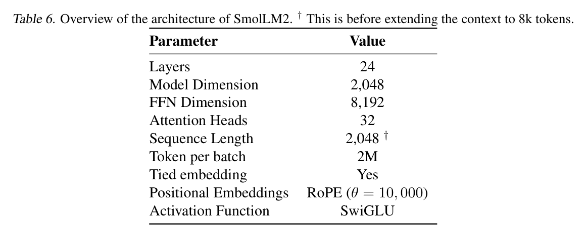
图 3 展示了使用 WSD 调度器时，训练过程中的学习率变化。
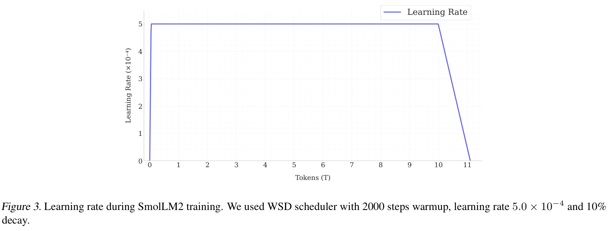
图 4 展示了分别使用 DCLM、FineWeb-Edu 及二者混合训练 350B tokens 的消融模型的评测曲线。
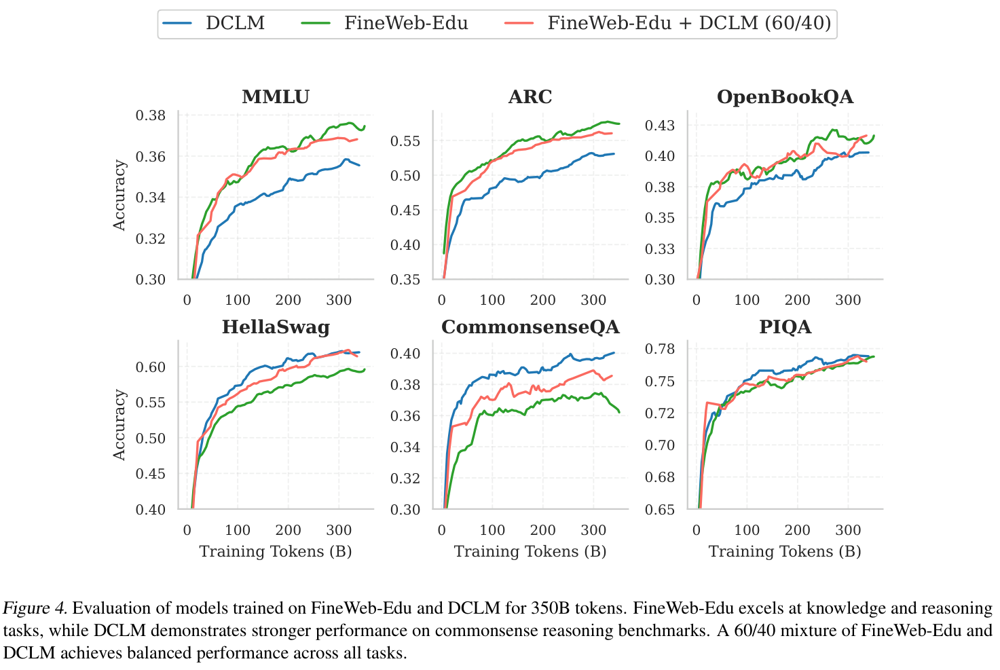
图 5 展示了使用 OWM 和 InfiMM-WebMath 训练的消融模型，在 GSM8k 和 MATH 上的表现。
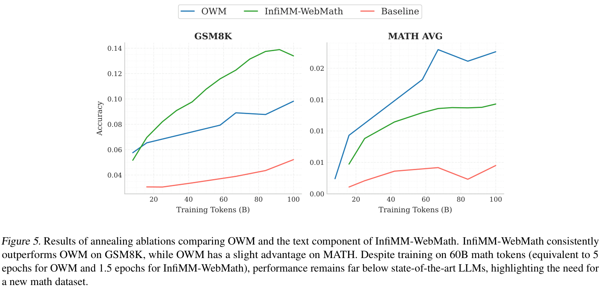
我们使用以下提示词模板，通过 Llama3 模型为 FineMath 生成 3 分制银标准标注：
评估下面的文本片段，对学习高中及本科初期水平以内的数学而言，它可能有多大用处。使用以下描述的 3 分制评分系统。每满足一条标准，就累加相应分数：
- 如果片段包含一些数学内容，加 1 分，即使它对学习并不十分有用，或是一篇过于高深的学术论文。
- 如果片段展示了数学语境下的逻辑推理，再加 1 分，即使缺少分步解释，或内容过于高深。
- 如果片段的难度适当，即高中及本科初期水平以内，并包含清晰的数学推导和分步解题过程，给予第 3 分。
只要符合标准，就可以接受问答形式，例如教育网站或论坛的内容。忽略任何格式错误或缺失的公式，并根据整体内容作出假设。
文本片段：
<EXTRACT>查看片段之后：
- 简要说明总分的理由，不超过 100 个词。
- 最后使用以下格式给出分数：
"Final score: <total points>"。
在第二轮过滤阶段，我们使用以下提示词模板，通过 Llama3 模型为 FineMath 生成 5 分制标注：
评估下面的文本片段，对学习高中及本科初期水平以内的数学而言，它可能有多大用处。使用以下描述的 5 分制评分系统。每满足一条标准，就累加相应分数：〔评分标准续下页〕
〔接上页：FineMath 的 5 分制评分标准〕
- 如果片段包含一些数学内容，加 1 分，即使它对学习并不十分有用，或包含非学术内容，例如广告以及用于换算重量和货币的自动生成页面。
- 如果片段涉及数学主题，再加 1 分，即使写作质量较差，或内容过于复杂，例如过于高深的学术论文。
- 如果片段在数学语境下展示了解题或逻辑推理，给予第 3 分，即使缺少分步解释。
- 如果片段的难度适当，即高中及本科初期水平以内，并包含清晰的数学推导和分步解题过程，给予第 4 分。它应类似教材中的一个章节或教程。
- 如果片段对初中和高中数学的教学与学习具有突出的教育价值，给予第 5 分。它应包含非常详细、易于理解的解释。
只要符合标准，就可以接受问答形式，例如教育网站或论坛的内容。
文本片段：
<EXTRACT>查看片段之后：
- 简要说明总分的理由，不超过 100 个词。
- 最后使用以下格式给出分数：
Final score: <total points>。
我们使用以下提示词模板，通过 Llama3 模型为 Stack-Edu 生成 5 分制标注，此处以 Python 为例：
下面是一段 Python 程序。评估它是否具有较高教育价值，以及能否帮助教授编程。使用以下描述的累加式 5 分制评分系统。每满足一条标准，就累加相应分数：
- 如果程序包含有效的 Python 代码，加 1 分，即使没有教育价值，例如模板代码、配置和小众概念。
- 如果程序涉及实用概念，再加 1 分，即使缺少注释。
- 如果程序适合教育用途，并介绍编程的关键概念，给予第 3 分，即使主题较为高深，例如深度学习。代码应结构清晰，并包含一些注释。
- 如果程序可以独立理解，并与编程教学高度相关，给予第 4 分。它应类似课堂练习、教程或 Python 课程的一个章节。
- 如果程序具有突出的教育价值，非常适合教授编程，给予第 5 分。它应编写良好、易于理解，并包含分步解释和注释。
片段：
<EXAMPLE>查看片段之后：
- 简要说明总分的理由，不超过 100 个词。
- 最后使用以下格式给出分数：
"Educational score: <total points>
对于 Stack-Edu 中其他 14 种编程语言，我们使用类似提示词，并调整第 3 条标准中的示例，以体现特定语言的主题。例如，在 JavaScript 提示词中，我们将“深度学习”替换为“异步编程”。
表 7 展示了 Stack-Edu 中各编程语言在教育性过滤前后的规模。最初我们也加入 HTML，但分类器表现较差，因此保留 StarCoder2Data。
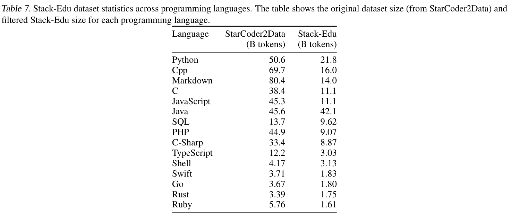
表 8 展示了 SmolLM2 在每个训练阶段结束时的评测结果。除消融实验使用的基准外，我们还加入四个生成式任务：CoQA（Reddy et al., 2019）、DROP（Dua et al., 2019）、Jeopardy（MosaicML, 2024）和 SQuAD v2（Rajpurkar et al., 2018）。
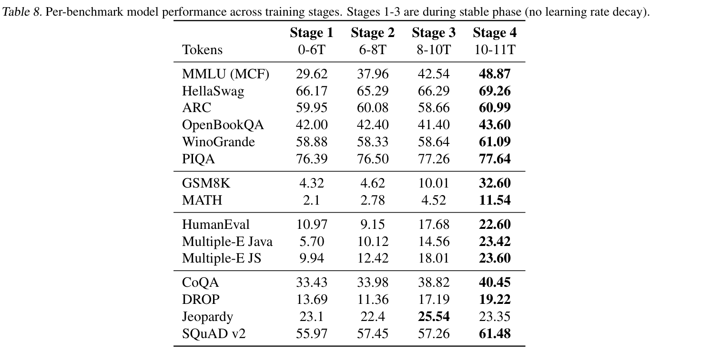
图 6 展示了整个稳定阶段中 MMLU 分数的变化。
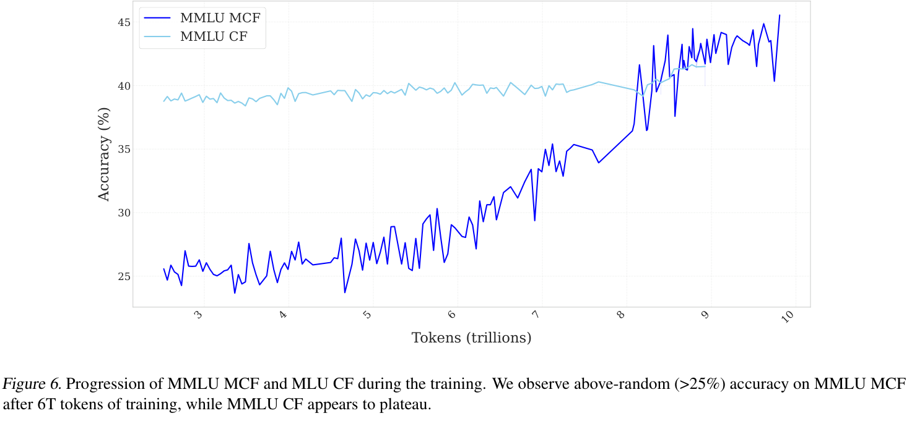
表 9 展示了 SmolTalk 数据集的最终组成。
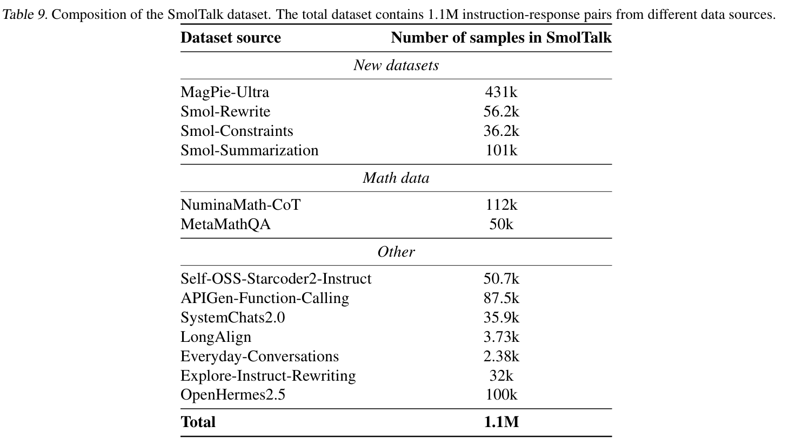
表 10 展示了在我们考虑的 SmolTalk 不同组成部分上训练后的性能。上半部分比较了使用不同指令数据集微调 SmolLM2 基础模型的结果；下半部分评估了在 SFT 期间，向 80% MagPie-Ultra+ 的基础混合中加入 20% 专门数学数据的影响。最后一行 SmolLM2-SFT 表示 SmolLM2 在 DPO 之前的最终 SFT checkpoint，它使用完整 SmolTalk 数据集训练了两个 epoch。
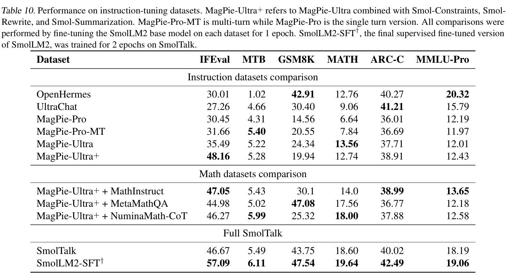
图 7 展示了 Needle in the Haystack 基准上的评测结果。
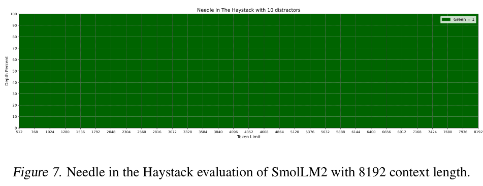
表 11 展示了 HELMET 基准上的评测结果。
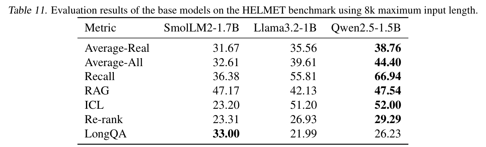